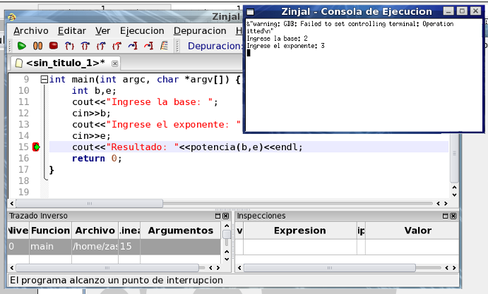

Coloque un punto de interrupción en la línea 15 (donde está la llamada potencia(b,e);), y presione F5 para ejecutar el programa hasta este punto. Cuando solicite base y exponente ingrese 2 y 3 respectivamente.

La ejecución debería detenerse justo antes de calcular el resultado.
Volver... Continuar...